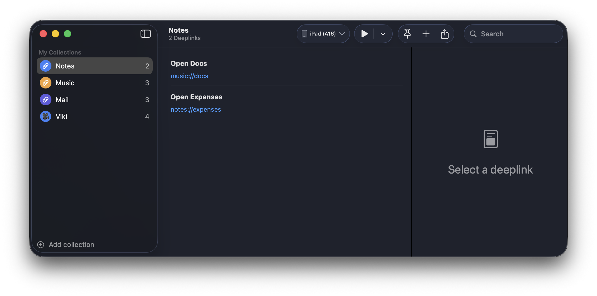
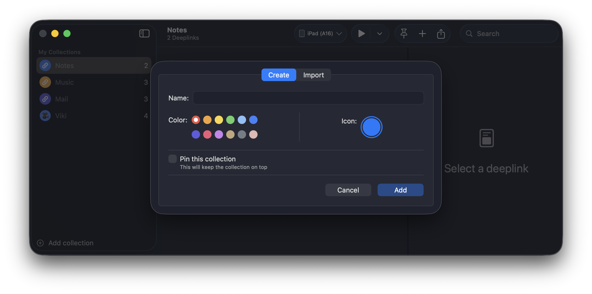
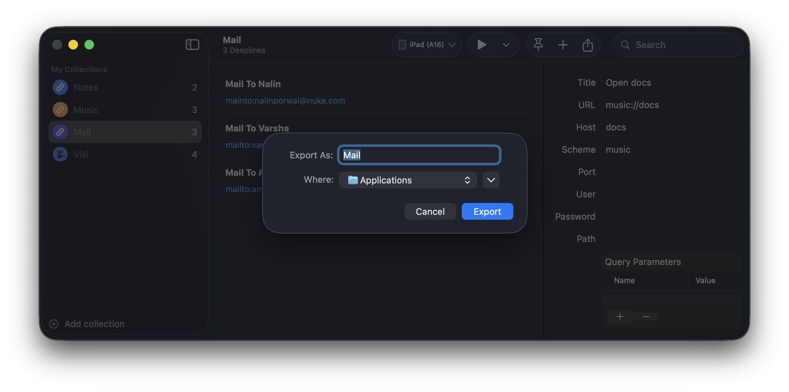

DeeplinkScout helps you launch, inspect, and organize deeplinks across simulators and devices. Keep a living library of test cases and share them with your team.
Requires macOS 14.6+ and Xcode command line tools.
Simulators or physical devices, all in one list.
Launch, repeat, and validate instantly.
Save workflows, export, and share across teams.
From one-off checks to whole suites of deeplinks, DeeplinkScout keeps everything in one window.
Group deeplinks by feature, release, or scenario. Add notes and keep context with each launch.
Launch deeplinks on booted simulators or attached devices without switching tools.
Move deeplink sets between teammates or machines with a clean export format.
Keep your app on track with one-click retesting and quick fixes.
Curated views from the app, ready to guide your next deeplink session.



Download directly or install via Homebrew.
Grab the latest release and start testing instantly.
Download DMGInstall and update from your terminal.
Feature ideas and issue reports go straight to GitHub so the community can track progress.
Describe your workflow and why it matters. Others can upvote and comment.
Request features